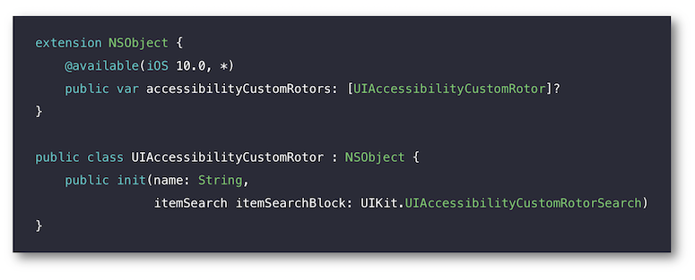
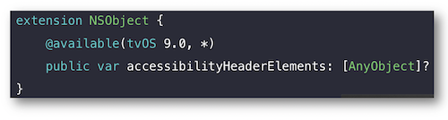

WWDC 2016 : Les nouveautés en accessibilité
Cette présentation visualisable sur le site développeur officiel d'Apple (session 202) a pour buts de mettre en avant les principales nouveautés en terme d'accessibilité et de rappeler quelques fondamentaux avec une importance notable pour VoiceOver.

Les thèmes abordés ainsi que leur référence temporelle au sein de la vidéo sont décrits ci-dessous :
-
Fonctionnalités
- MOTEUR - Switch Control (02:29) ⟹ nouveauté tvOS 10
- MOTEUR - Dwell Control (03:36)
- VUE - Adaptation des couleurs (04:15) ⟹ nouveauté tvOS 10
- VUE - Taptic time (04:53)
- VUE - Loupe (05:17) ⟹ nouveauté iOS 10
- OUÏE - TTY (06:51) ⟹ nouveauté iOS 10
- APPRENTISSAGE - Retour audio d'écriture (07:51)
-
Programmation
- Découvrir le protocole UIAccessibility (14:19)
- accessibilityElements (18:00)
- accessibilityFrameInContainerSpace (19:02) ⟹ nouveauté iOS 10
- accessibilityCustomRotors (24:19) ⟹ nouveauté iOS 10
- tvOS header elements (31:20)
-
Exemple : au cours de cette présentation, de nombreuses solutions sont proposées par le biais d'une application d'exemple pour répondre aux questions que se posent les développeurs face aux problèmes rencontrés en accessibilité avec VoiceOver. Il est vivement conseillé de regarder l'application d'exemple sans améliorations avant de consulter les solutions. Une fois tous les problèmes soulevés par ces questions solutionnés, l'accessibilité VoiceOver de l'application s'améliore nettement pour aboutir à la démonstration réalisée en séance.
- Rendre une
table view cellactivable (19:58). - Mettre un
labeldynamique sur un bouton (20:21). - Rendre accessibles des éléments
CALayerutilisés pour créer un graphe par exemple (20:45). - Comprendre la problématique de navigation sur un plan avec VoiceOver (23:33).
- Effectuer une recherche concernant les éléments d'une
table view(25:37) et d'un plan (27:45) avec lerotor.
- Rendre une
Par la suite, le fait de cliquer sur un titre permet d'ouvrir la vidéo de présentation Apple directement au moment indiqué.
MOTEUR - Switch Control (02:29) #
Après un petit rappel sur l'utilisation iOS de cette fonctionnalité, un focus particulier est mis sur son introduction avec tvOS.

MOTEUR - Dwell Control (03:36) #
Des appareils spécifiques connectés à l'ordinateur permettent de l'utiliser sans avoir à manipuler la souris en associant le mouvement de cette dernière à celui des yeux.
Lorsque le curseur se stabilise, un timer est lancé à l'expiration duquel une action dédiée est déclenchée (nouveauté MacOS).

VUE - Adaptation des couleurs (04:15) #
Toutes les facilités déjà présentes sur iOS et MacOS pour aider au maximum les personnes ayant des problèmes de reconnaissance de couleurs ou une forte sensibilité à la lumière sont désormais aussi disponibles sur tvOS.
VUE - Taptic time (04:53) #
WatchOS 3 introduit cette fonctionnalité qui permet via VoiceOver de mettre en oeuvre toute une série de taps spécifiques pour donner l'heure d'une façon très silencieuse et discrète.
VUE - Loupe (05:17) #
Cette nouveauté iOS 10 permet d'utiliser son appareil mobile comme une loupe en associant des fonctionnalités d'accessibilité (stabilisateur d'écran, filtres de couleurs...) mises en situation par une démonstration au sein de cette présentation.
OUÏE - TTY (06:51) #
L'utilisation du TTY (Typewriter) qui permet de faire passer du texte sur une ligne téléphonique grâce des appareils dédiés est désormais possible sur iOS.
Cette nouveauté iOS 10 sous forme d'implémentation software permet donc de réaliser ce type de conversation directement sur son appareil mobile sans avoir à ajouter quelque complément matériel que ce soit.
APPRENTISSAGE - Retour audio d'écriture (07:51) #
Outre les améliorations réalisées sur Énoncer la sélection et Énoncer le contenu de l'écran dans la partie Accessibilité - Parole des réglages, un retour audio sur ce qui est tapé à l'écran par l'utilisateur a aussi été implémenté.
Cette nouveauté iOS 10 permet à des personnes dyslexiques par exemple de vérifier directement leurs écrits qu'une démonstration au sein de cette présentation met en évidence.
Découvrir le protocole UIAccessibility (14:19) #
Petit rappel sur les fondements du protocole informel UIAccessibility qui va être utilisé dans la suite de la présentation.

accessibilityElements (18:00) #
Rappel sur l'intérêt de créer ce type d'objets et le contexte au sein duquel ils évoluent.

accessibilityFrameInContainerSpace (19:02) #
Nouveauté iOS 10 qui permet la gestion automatique des coordonnées d'un élément accessible dans son container.

accessibilityCustomRotors (24:19) #
Nouveauté iOS 10 qui permet d'ajouter des éléments personnalisés sur le rotor natif d'un terminal.

La mise en place programmatique de ce type de fonctionnement est aussi présentée dans la partie développement.
tvOS header elements (31:20) #
Rappel sur l'implémentation des éléments cités en objet ainsi que sur leur intérêt avec une navigation VoiceOver au sein de l'univers tvOS.
